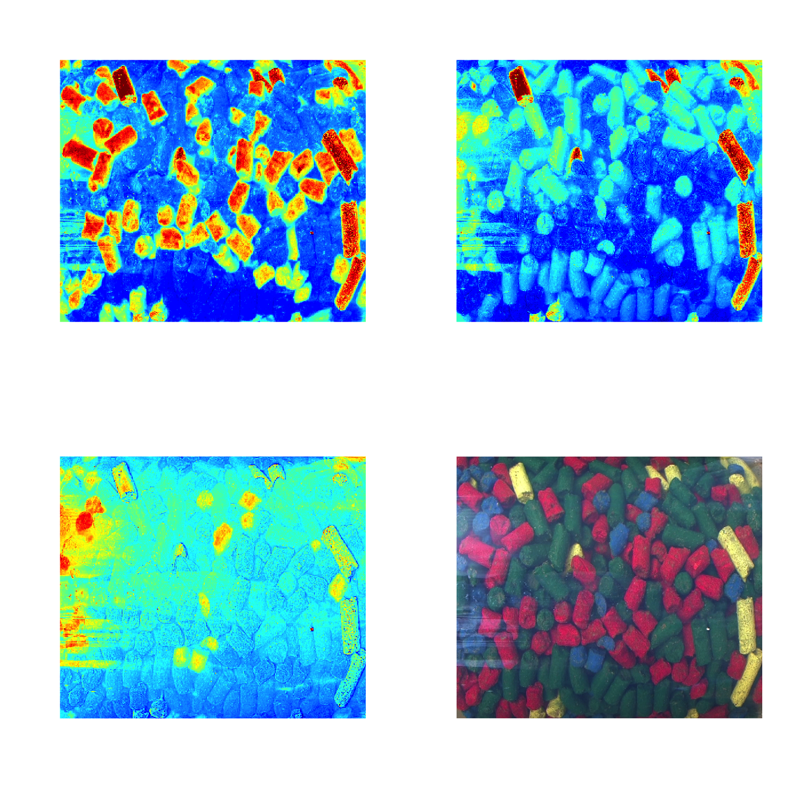
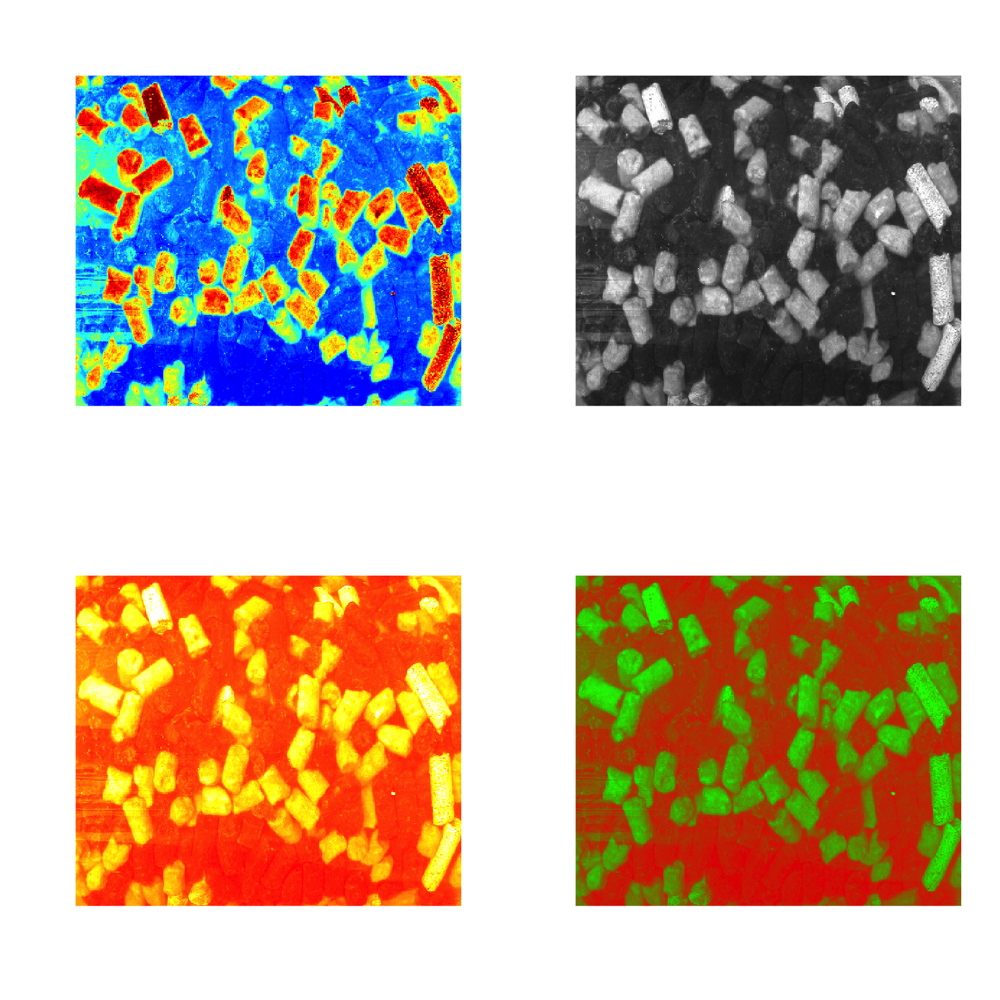

Working with images
From version 0.8.0 the package also supports images, however they have to be transformed into datasets. The idea is very simple, we keep information about image pixels in an unfolded form, as a matrix, and use attributes width and height to reshape the data when we need to show it as an image.
There are three methods that make this procedure easier: mda.im2data(), mda.data2im() and imshow(). The first convert an image (represented as 3-way array) to a data set, second does the opposite and the third takes dataset and shows it as an image. In the code chunk below you will see several examples how the methods work.
We will use a dataset image available in the package. It is a 3-way array of numbers, if you want to work with e.g. JPEG, PNG or other standard image files you can load them using specific packages (jpeg,
png).
data(pellets)
# convert image to a data matrix and add some attributed
d = mda.im2data(pellets)
colnames(d) = c("Red", "Green", "Blue")
attr(d, "name") = "Image"
# show data values
mda.show(d, 10)## Image
## -----
## Red Green Blue
## [1,] 183 80 101
## [2,] 191 76 105
## [3,] 187 73 99
## [4,] 199 81 113
## [5,] 198 81 110
## [6,] 197 84 114
## [7,] 191 83 109
## [8,] 193 83 110
## [9,] 188 83 114
## [10,] 172 86 115# show separate channels and the whole image in plots
par(mfrow = c(2, 2))
imshow(d, 1)
imshow(d, 2)
imshow(d, 3)
imshow(d, 1:3)
By default image for one channels is shown using jet color palette for intensities, but you can also use gray colors, palette from colorbrewer2 as well as your own.
par(mfrow = c(2, 2))
imshow(d, 1)
imshow(d, 1, colmap = "gray")
imshow(d, 1, colmap = heat.colors(256))
imshow(d, 1, colmap = colorRampPalette(c("red", "green"))(256))
You can work with the image values as normal dataset and show scatter, line plots, calculate statistics, etc.
However, it will take some time to show these plots as this image has several hundreds of thousands pixels, a faster alternative can be the use density plot based on hexagonal binning. Use type = "d" for this as shown below. Number of bins can be adjusted by using parameter nbins.
par(mfrow = c(1, 2))
mdaplot(d, type = "d")
mdaplot(mda.subset(d, select = c("Red", "Blue")), type = "d", nbins = 40)Another useful thing is to set some of the pixels as background. The background pixels are removed from the image dataset physically, there is no way to get them back (in cotrast to excluded rows/pixels). It can be particularly useful when working with e.g. geocorrected hyperspectral images, where, often, many pixels have NA values and there is no need to keep them in memory. To set pixels as background you need to use method mda.setimbg() with either pixel indices or vector with logical values as it is shown below.
## [1] 114000 3## [1] 66471 3
All image related attributes are inherited by all object/rows related results, e.g. scores, residuals, predicted values and classes, etc. This means if you provide an image to any modelling method, you can visualise the corresponding results also as an image. Some examples will be shown in [chapter about PCA][Principal component analysis].